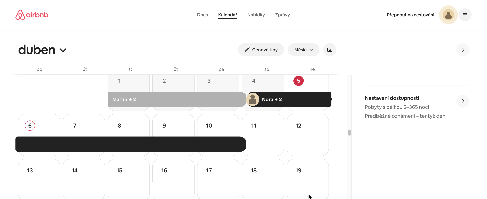
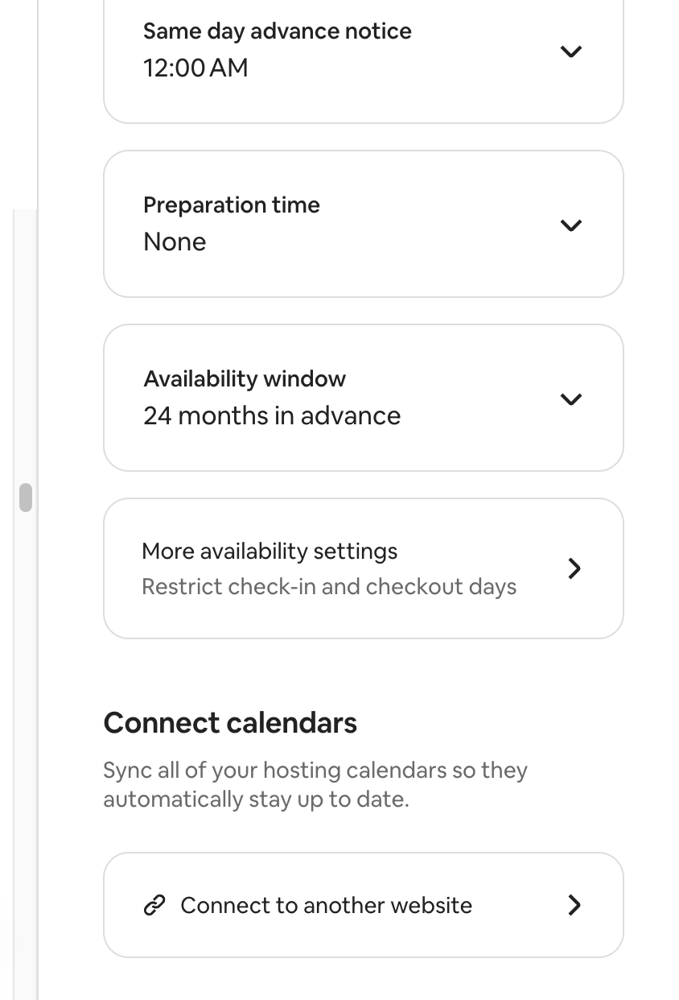

Co iCal běžně přenáší
- datum příjezdu a odjezdu
- obsazené nebo blokované termíny
- základní identifikaci události
iCal je nejrychlejší způsob, jak dostat do Superhostem první rezervace a blokace termínů. Tento návod řeší dvě nejčastější situace: jak najít iCal na Airbnb a jak ho získat z Booking.com.
Nejdřív si zkopírujete iCal odkaz z Airbnb nebo Bookingu, potom ho vložíte do nastavení nemovitosti v Superhostem a nakonec zkontrolujete, že se kalendář správně propsal.
iCal dává největší smysl na začátku, když chcete rychle propojit kalendář s nemovitostí. Pokud pak chcete pracovat i s detailnějšími daty o rezervacích, navazuje na to email forwarding a automatizace.


Podle aktuální oficiální nápovědy Airbnb začínáte v sekci Calendar a vyberete konkrétní listing, který chcete propojit.
V kalendáři daného listingu otevřete část Availability. Právě tam Airbnb aktuálně schovává propojení s dalšími kalendáři.
Pod Connect calendars klikněte na Connect to another website. Airbnb vám zobrazí kalendářový odkaz, který můžete exportovat.
Zkopírujte celou adresu, ne jen její část. Airbnb výslovně uvádí, že pro import na druhou stranu má jít o URL končící na .ics.
Přihlaste se do Extranetu Booking.com a otevřete konkrétní objekt, který chcete propojit.
Podle aktuální verze Extranetu běžte buď přes Rates & Availability → Calendar, nebo přímo do Calendar & Pricing.
V kalendáři otevřete Sync calendars a zvolte Add calendar connection. Booking tím otevře průvodce propojením s jiným kalendářem.
V průvodci klikněte na Copy link a zkopírujte svůj Booking.com iCal odkaz. Pod Export options bývá možné zvolit, jestli chcete exportovat jen rezervované termíny, nebo i uzavřené termíny.
Pokud máte více pokojů nebo jednotek, ověřte, že berete iCal právě pro tu konkrétní nemovitost, kterou napojujete. Po dokončení se v Extranetu obvykle zobrazí stav spojení, například Activating nebo OK.
U Airbnb už máme díky screenshotům potvrzené aktuální flow přes Kalendář a Nastavení dostupnosti. U Booking.com se držte stejné logiky: otevřít kalendář, najít synchronizaci kalendářů a zkopírovat exportní odkaz pro konkrétní jednotku.
V Superhostem otevřete konkrétní nemovitost, kterou právě nastavujete.
V nastavení nemovitosti přejděte do části, kde se přidává zdroj kalendáře.
Do pole pro iCal vložte zkopírovanou adresu z Airbnb nebo Bookingu a zdroj si srozumitelně pojmenujte, například Airbnb nebo Booking.
Po uložení ověřte, že se rezervace nebo blokace propsaly do kalendáře nemovitosti.
Tento článek je praktický návod podle běžného postupu v Airbnb a Booking.com. Rozhraní platforem se může měnit, proto je dobré počítat s drobnými rozdíly v názvech sekcí.